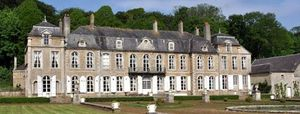
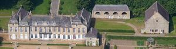
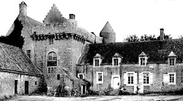

Recensement Jean-Claude Truffet
| Département | 62 — Pas-de-Calais |
| Canton | Boulogne-sur-Mer |
| Commune | Wimille |
| Type d'édifice | Château |
| Période d'origine | XVII-XVIII |
| Coordonnées GPS | 50° 45' 50" Nord, 1° 38' 01" Est |



LOZEMBRUNE, le château est composé dun corps central de neuf travées datant de 1751 et de deux ailes dans son prolongement de deux travées chacune bâties entre 1830 et 1850. Le corps de logis central est composé dun avant-corps à fronton triangulaire de trois travées placé dans laxe et deux pavillons aux extrémités. Les ailes en forme de pavillons sincorporent aux constructions précédentes par les proportions et lutilisation des mêmes matériaux; la pierre du boulonnais sur les deux niveaux et un niveau sous comble couvert en ardoise. Le parc, de style composite, est constitué dun parc boisé, dune cour dhonneur et dun jardin à la française, lensemble est enclos dun mur en pierre. Le parc boisé situé à lEst est composé dallées au tracé régulier dont deux mènent au château, lune depuis Wimille, lautre depuis le site paysager des hameaux dAuvringhem et la Poterie, vers Boulogne. Le parc boisé descend vers la cour du château avec une très forte dénivellation.
Le jardin à la française à lOuest est sur un terrain en terrasses clos ne permettant aucune vue sur lextérieur. Il est composé de huit grands parterres encadrant trois bassins; rond, ovale et carré à bords chantournés. Des sections de murs bas, cantonnés de piliers carrés sommés de vases, limitent de chaque côté de ces parterres deux allées bordées vers lextérieur de pelouses piquées darbustes dépine, de buis et de pommiers taillés en boule. La descente vers le jardin se fait par trois escaliers étroits reliés entre eux par un mur bas, également cantonné de piliers bas à vases en fonte. Une fontaine aux courbes harmonieuses rassemble les eaux de sources dans langle Sud-Ouest.
LOZEMBRUNE, éléments protégés MH : en totalité les éléments suivants du château : les façades et les toitures, l'escalier avec sa cage et sa rampe en fer forgé, la salle à manger du rez-de-chaussée et le grand salon au premier étage avec leur décor ; pour leurs façades et toitures les quatre bâtiments des communs ; en totalité les éléments suivants : le sol pavé de la cour d'honneur avec clôtures comprenant murs bahuts, piliers, vases et grilles, le jardin à la française avec l'ensemble de ses éléments constitutifs pavillon, les allées d'accès, le verger à flanc de coteau, le potager et son mur séparatif d'avec le jardin à la française, une pâture, une grande pâture arborée et le bois avec au sud le système hydraulique comprenant la fontaine et le canal et à l'ouest le grand escalier monumental avec mur de soutènement, murs bahuts et piédestaux faisant partie du domaine : inscription par arrêté du 8 novembre 2011. Dans la perspective de la demeure et à lextrémité du jardin, un pavillon à proximité de la rivière, construit au XIXe siècle; petit salon de thé à lheure où le soleil ignore le château. HONVAULT au village voisin Wimereux. Le logis, avec sa tour circulaire, a été construit en plusieurs campagnes, du XIIIe au XVIe siècle. Il aurait été la résidence d'Henri VIII d'Angleterre pendant le siège de Boulogne en 1544. Il a été détruit durant la deuxième guerre mondiale et remplacé par un édifice construit après 1945. Le jardin enclos, qui apparaît sur des vues du début du XIXe siècle, a aussi disparu. Les bâtiments de ferme semblent avoir été construits au XIXe siècle.
François de La Pasture d'Offrethun"
Deux châteaux dans cet article; Lozembrune grav -1-2 et Honvault grav 3 GPS : 50° 45' 50" Nord, 1° 38' 01" Est